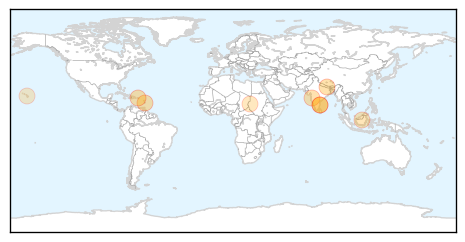

30 Day Trends
Web: 0 alerts, 0 warnings
Twitter: 2 alerts, 0 warnings
Top Articles:
- 0.992
- CDC: Don’t let dengue outbreak change travel plans - Mauinews.com
- 0.984
- Another mosquito borne virus expected to spread widely
- 0.974
- After deluge, diarrhoea, dengue emerge
- 0.971
- After deluge, diarrhoea, dengue emerge
- 0.961
- Banda affects bid to control dengue
- 0.941
- Lawmakers asking Whether Hawaii doing enough to stem Dengue Fever Outbreak
- 0.822
- Sarawak records fewer TB cases this year – BorneoPost Online
- 0.752
- Sudan: Humanitarian Bulletin Issue 46
- 0.647
- County officials provide dengue screenings for homeless
Top Tweets:
-
No tweets found for Nov 22, 2015
Web/News Articles

Tweets

Article Locations
Article Confidences